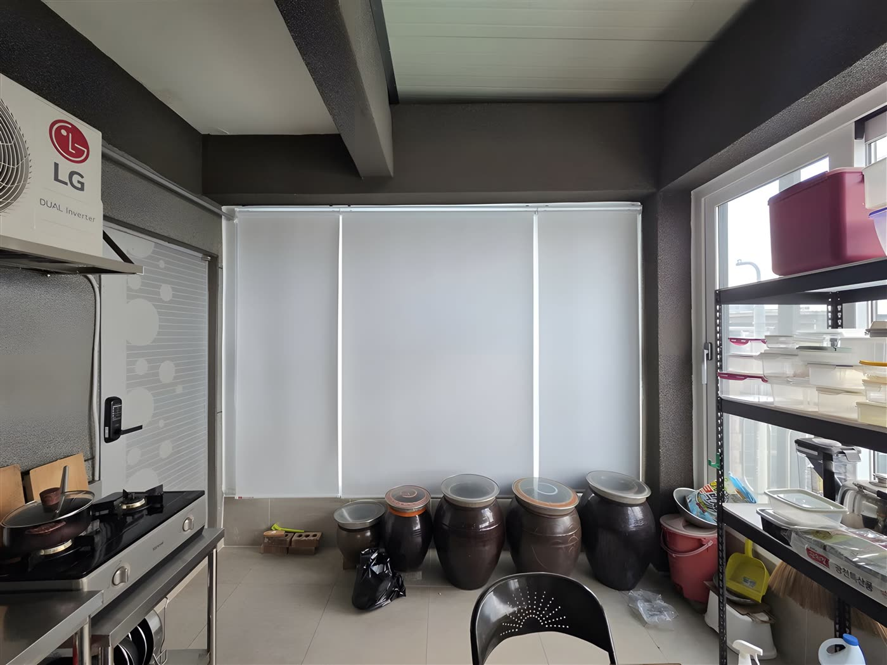
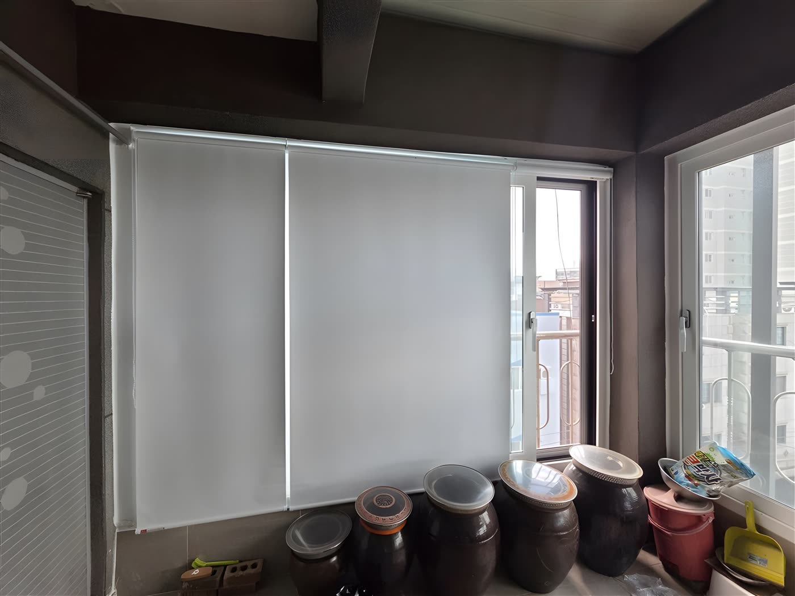

2026년 6월 4일 시공
포항 죽도동 베란다
암막롤스크린 시공후기

포항 죽도동에 다녀왔습니다.
주방 옆 베란다 창 때문에 고민이 많으시다고 연락을 주신 댁이었는데, 가서 보니 바로 이해가 됐습니다.
가로 3미터, 세로 2.3미터의 큰 창이 서향으로 나 있어 오후만 되면 햇살이 그대로 쏟아지고
장독대와 살림살이가 놓인 공간이라 한여름엔 열기까지 더해져 여간 불편한 게 아니셨다고 합니다.
창 칸에 맞춰 롤스크린 3개로 나눴습니다
창 구조는 좌우로 열리는 오픈창 2개에 가운데 고정창 1개, 총 세 칸이었습니다.
환기를 위해 양쪽 창을 자주 여닫으셔야 해서
창 전체를 한 폭으로 덮지 않고 창 칸에 맞춰 롤스크린 3개를 나란히 시공하는 방법을 추천드렸습니다.
필요한 쪽만 올리고 내릴 수 있어 환기할 때 편하고, 한쪽을 올려도 나머지 두 폭은 그대로 빛을 막아 줍니다.
고정창 쪽은 내려 둔 채 오픈창 쪽만 걷어 올리면 되니, 생활 동선에 맞춰 쓰기 좋습니다.
서향 창에는 반차광으로 부족합니다
원단은 차광률 100% 암막으로 골랐습니다.
서향 창은 오후 내내 해가 낮은 각도로 깊게 들어오는 자리라, 어설픈 반차광 원단으로는 눈부심을 잡기 어렵다고 판단했습니다.
특히 여름 서향은 오후 두세 시부터 해 질 때까지 빛이 길게 이어져 체감이 큽니다.
차광 100% 원단은 빛을 원천적으로 막는 만큼 창으로 들어오는 열기도 함께 줄여 줘, 한여름 냉방에도 보탬이 됩니다.
색상은 암막이라도 공간이 어두워 보이지 않게 화이트로 맞췄습니다.
방염 원단이라 불을 쓰는 주방 옆 공간에 쓰기에도 한결 안심입니다.

천장 상태가 안 좋아도 방법이 있습니다
이번 현장은 천장이 콘크리트인데 수평이 맞지 않아 천장 고정이 어려운 상태였습니다.
수평이 안 맞는 천장에 그대로 달면 블라인드가 기울어 내려오거나 고정이 헐거워질 수 있습니다.
그래서 ㄱ자형 꺾쇠로 샷시에 고정하고 클립을 설치한 뒤 블라인드를 거는 방식으로 바꿔 진행했습니다.
현장 상황에 맞춰 고정 방식을 바꾸면 천장 상태가 안 좋아도 흔들림 없이 튼튼하게 시공됩니다.

빛샘 틈새까지 잡아야 암막입니다
롤스크린을 여러 폭으로 나눠 달면 폭 사이 틈새로 빛이 새기 마련입니다.
그래서 창문 분할 틈새를 샷시틀에 맞춰 가리는 방식으로 차단율을 최대한 끌어올렸습니다.
조작줄은 좌우 양쪽으로 빼서 쓰기 편한 위치로 잡았습니다.
시공 후 내려보니 그 강하던 서향 햇살이 딱 막혀 눈부심이 확 줄고, 실내로 들어오는 열기도 확실히 덜해졌습니다.
사장님께서도 진작 할 걸 그랬다고 하셨습니다.
롤스크린 관리는 어렵지 않습니다
롤스크린은 원단이 한 장으로 평평하게 떨어지는 구조라 관리가 단순한 편입니다.
평소에는 마른 먼지떨이로 가볍게 털어 주시고, 얼룩이 생기면 물기를 꼭 짠 천으로 살살 눌러 닦아 주시면 됩니다.
원단을 세게 문지르거나 접지만 않으면 오래 써도 형태가 잘 유지됩니다.
말아 올리면 부피가 거의 없어, 이 댁처럼 짐이 오가는 베란다에서도 걸리적거리지 않습니다.
포항 죽도동을 비롯해 대구·경북 전 지역, 서향 창 눈부심이나 열기로 고민이시라면 편하게 문의 주세요.